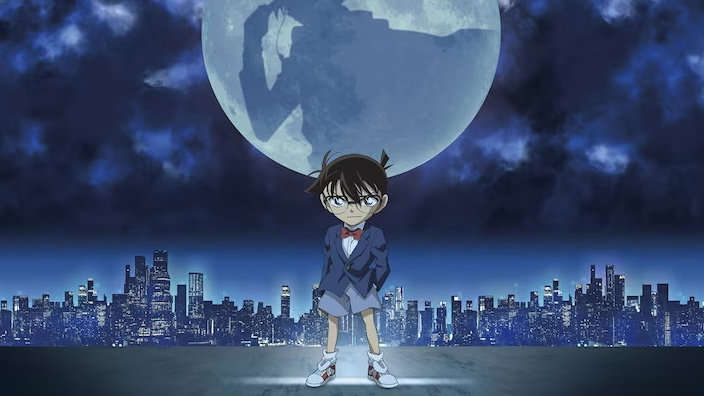

DETECTIVE CONAN / MAIN STORY
One truth.
Follow the clues.
The essential story, one episode at a time.
Open the casebook255selected episodes
09story arcs
255IMDb ratings
07 SEP 2026ratings snapshot
THE CASE FILES
Pick up the trail.
| Watched | EP. | CASE FILE | ARC | IMDb /10 | Sources and episode details |
|---|
No clues here.
Try another title, episode number, or filter.
Ratings checked 7 September 2026. Titles and linked sources may reveal story details.
A constellation of clues
Each dot is an episode. Each constellation is an arc.
Drag to explore · + / − to zoom · Select a node
EpisodeArcWatchedArc watch orderNode size: IMDb rating
255 episodes across nine arcs.
THE SCREENING ROOM
Every film.
One casebook.
29 main films + 6 extras, in release order.
0 of 35 watched
Saved on this device.No matching films.
Try another title, year, or category.
Catalog checked 7 September 2026. Japanese release dates. TV specials, OVAs, and unreleased films are excluded.
Detective Conan World ↗ · TMS official catalog ↗ · Movie data ↗
Artwork belongs to its respective rights holders. Image sources are recorded in the movie data.